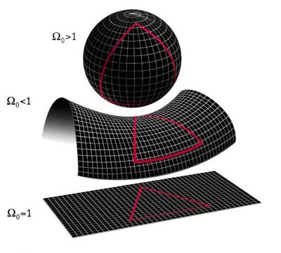

I am trying to remeber the article, but there was a lady who was nominated for a Nobel Prize for her work on there being 44 demensions to the universe… interesting stuff.
Also, there have been some great articles in Scientific America about the universe continuing to expand, to where given enough time, there will only be a few light particles traveling about. Then one has to wonder about the fruity black holes. I really do not understand them. Do they empty somewhere else, or are they simply a gravity well? Regardless, great stuff in this thread folks.
I thought there were only 10 or 11 dimensions. I’d be very interested in reading such an article.
That seems to agree with the info from Krauss’ lecture, then.
Black holes are essentially collapsed stars with gravity so high nothing can escape it, not even light (although apparently there is some amount of microwave radiation coming from them, if I remember correctly).
They can be observed by light that passes just close enough to the black hole to lose some of its frequencies, which results in distortion of that light.
Again, if I remember correctly.
It would seem to me that it’s more of a case of the light/energy/mass density of the universe being very low than there being very little overall, I think.
You’re probably just quoting from that song or something, but anyway.
That’s what was previously accepted because it fitted observations the best. Now we have new data and new observations that confirm we actually live in a flat universe.
My pleasure :3
By the way, here is a graphic representation of the different kinds of universe:

The top one is a closed universe, the middle one is open, and the bottom one is flat.
Remember that these are 3D surfaces on 4D shapes represented by 2D surfaces on 3D shapes.
Which brings me to something else that’s quite interesting (basically the explanation of how to interpret this representation).
You can’t move in space without moving in time, because movement in space is caused by energy, which causes the universe to curve (in a 3D sense), which is basically what time is.
This is where dimensions come in. You can only move from one place in the third dimension to another by bending the fourth dimension. This bending is basically time.
In other words, when looking at the pictures above, you have to imagine the 3D shapes (the sphere, the curved plane, and plane) as time. The 2D surface on those shapes is space. This means you always travel in space and in time.
The effects of gravity and other forms of energy could be represented by pits and bumps in those shapes.
You should really watch this if you’re interested in knowing how to imagine this sort of thing.
A problem was that there was the possibility of the universe being spherical, but that it had grown to such an enormous size that it would be impossible for us (on our scale) to see if space-time curved that way. Imagine a sphere, from the outside you can see its a sphere but if you’re a small dot on top of the sphere then the specific region will look flat to you.
Indeed. That would be a closed universe. The guy giving the representation actually explained exactly what you just did, that you can’t see it’s a sphere when you’re standing on top of it.
That’s why they did those two sorts of experiments I mentioned (the one where they measure the ‘weight’ of the universe, and the one where they measure the curvature of light over long distances).
Edit: Here’s an article that explains the subject matter a little more clearly. I disagree with it on one point though:
In the lecture I linked previously, it was explained how a flat universe is quite perfect, in that it could very well have come from nothing through quantum mechanics, whereas the article doesn’t even mention this and insists on trying to cram in the big crunch somehow.
Ugh, every time I get into this stuff, I get confused and desperate for answers, then I shut down, reactivate, and try to comprehend all of this while my feeble mind continues to collapse, ultimately leaving me as an empty shell for a week or two… Or 10. Interesting things I read and heard here, and now I’m going to go lay down for a couple of hours and catch my breath. :B
Have you watched the lecture I linked? Dr. Krauss explains it much more clearly than I ever could, and he also says how we know all of that stuff, making it easier to comprehend.
Founded in 2004, Leakfree.org became one of the first online communities dedicated to Valve’s Source engine development. It is more famously known for the formation of Black Mesa: Source under the 'Leakfree Modification Team' handle in September 2004.